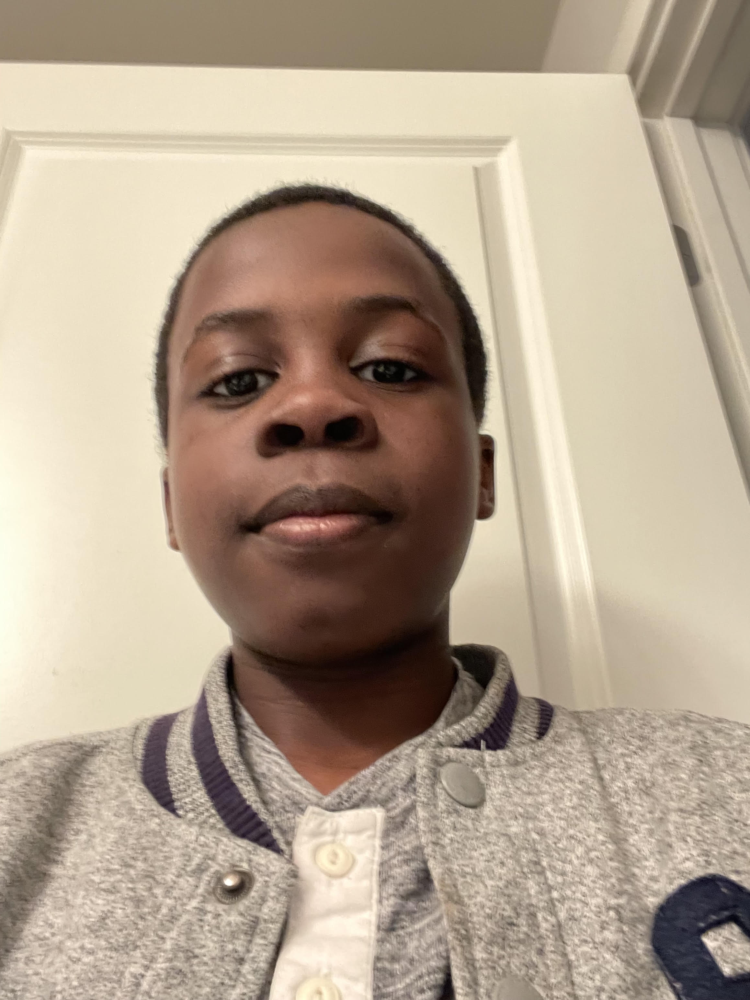
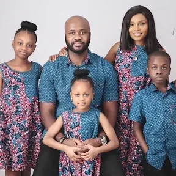
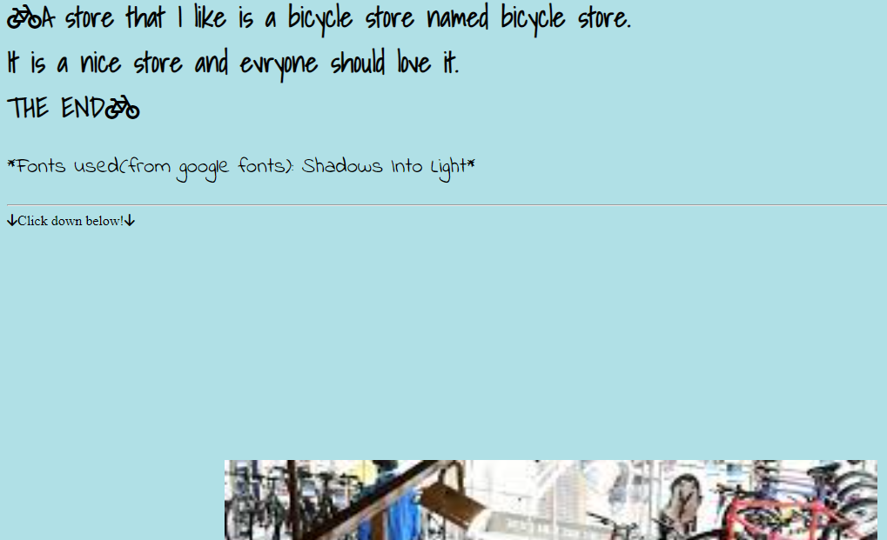
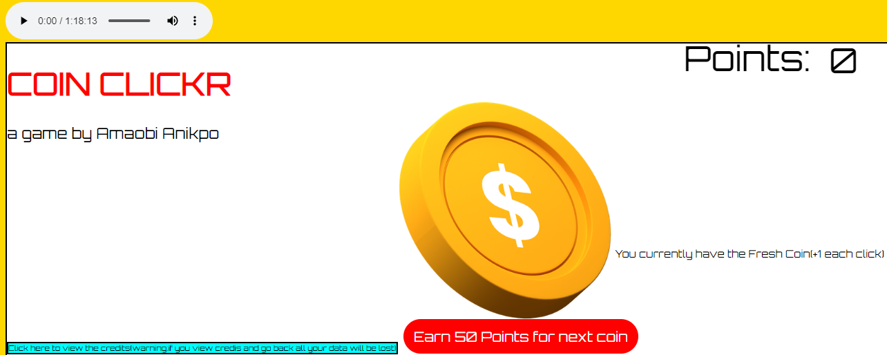
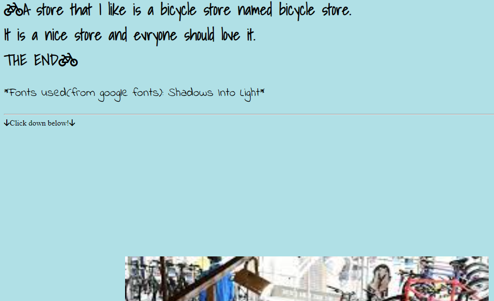
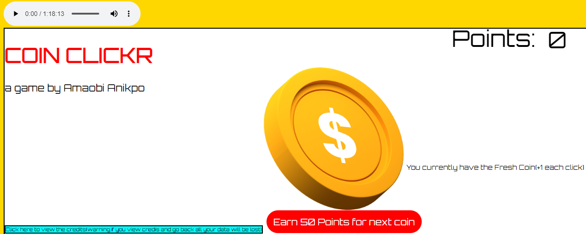

Amaobi's Portfolio for portable and non-portable devices

About me
Amaobichukwu Ian Anikpo is an eleven years old boy who is from Nigeria, was born in Brooklyn, New York
and currently lives in Saskatchewan, Canada. with his family. He also likes to code.
His was born on July, 20th, 2011. He is in a good school and has good family and friends everywhere and lives a
very nice life with his family and currently living a happy life and doing amazing things with his life for his family and friends.

Family
Amaobi's family, including him, is made up of five people : his mother, Chineye Anikpo
his father, Bob Anikpo, his older sister, Amarachi Anikpo, and his little sister Amaoge Anikpo. He also has an extended
family, his grandma, uncles, anties, and cousins and his whole family (including extended family) come
together in an event called the 24th night (the night before Christmas).
My achievments (projects I have worked on)
Some projects I am proud of and call achievments
in my life are My HTML projects : like Amaobi's Jumia, Coin Clicker, a bicycle project, and this one.




